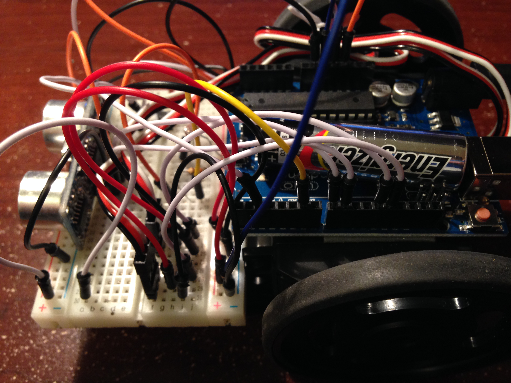
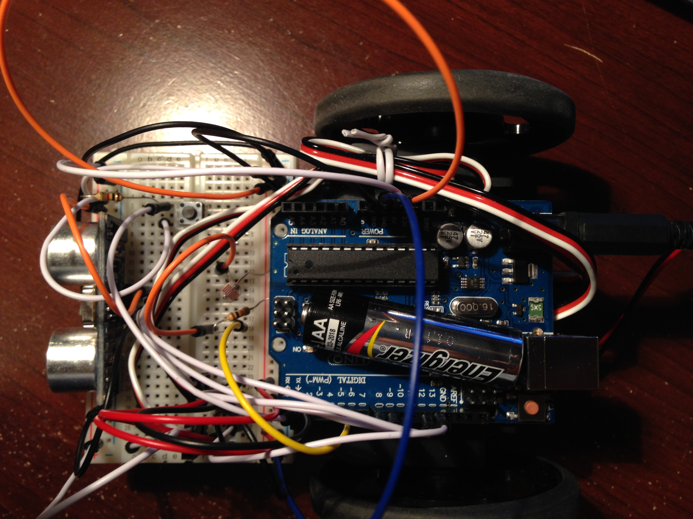

Arduino Autonomous Car
September 2014 - June 2015
Description
Programmed algorithms in Arduino Language (C/C++ based) to detect and maneuver around obstacles
Built and configured basic electric circuits with embedded Arduino UNO, servo motors, and ultrasonic sensors
Media

